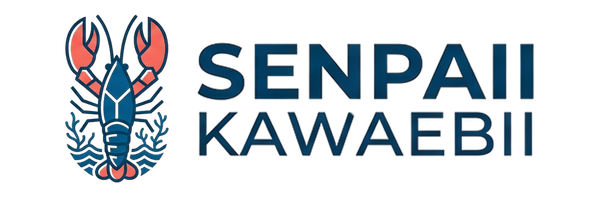

Your trusted partner in Australian Red Claw Crayfish farming, training, and aquaculture consultancy. Experience the serenity of freshwater farming.
Pioneering Sustainable Australian Red Claw Crayfish Farming
Senpaii Kawaebii Arc Farming & Aqua Venture is committed to revolutionizing aquaculture in the Philippines and beyond. We specialize in Australian Red Claw (ARC) Crayfish farming, supporting both established farmers and entrepreneurs entering the aquaculture industry.
Our mission is to promote sustainable aquaculture practices while providing comprehensive support through consultancy, training, and high-quality supplies. We believe in empowering farmers with the knowledge and resources they need to succeed.
With our expertise in water quality management, hatchery operations, and farming protocols, we ensure that every client receives the best guidance for a profitable and environmentally responsible aquaculture venture.
High-quality craylings and broodstocks
Professional aquaculture education
Eco-friendly farming methods
Comprehensive Aquaculture Solutions
Expert guidance on farm design, site selection, and operational management to optimize your Australian Red Claw Crayfish farming venture.
State-of-the-art hatchery services producing healthy craylings and managing full production cycles.
Comprehensive training programs for new farmers and entrepreneurs in ARC farming techniques and best practices.
Advanced testing and monitoring of physico-chemical parameters to ensure optimal water conditions for ARC populations.
Complete support in establishing your aquaculture facility from planning through infrastructure development.
Continuous consultation and troubleshooting for all your aquaculture needs throughout your farming journey.
Premium Aquaculture Supplies & Stock
Healthy, high-quality juvenile ARC crayfish for stocking ponds and farms. Sourced from our certified hatchery.
Premium GradeSuperior breeding ARC crayfish selected for optimal genetics. Perfect for establishing productive breeding populations.
Elite SelectionSpecialized feeds, supplements, and growth-enhancing products designed specifically for ARC crayfish.
Premium QualityComplete range of equipment, water treatment products, and farm management supplies for optimal operations.
Full RangeDevelop Your Aquaculture Expertise
Introduction to Australian Red Claw Crayfish biology, basic farm setup, and operational fundamentals. Perfect for new entrepreneurs.
In-depth training on breeding programs, larval development, and large-scale hatchery operations.
Expert training on monitoring water parameters, disease prevention, and maintaining farm health standards.
Learn to manage aquaculture ventures profitably, including market analysis, pricing, and customer relations.
Ready to start your ARC farming journey?
We'd love to hear from you
Lot 70, Blk 5, Prk 28, Ric Ville
Brgy San Jose, General Santos City
South Cotabato 9500, Philippines
Google Map Integration
Embed your location here